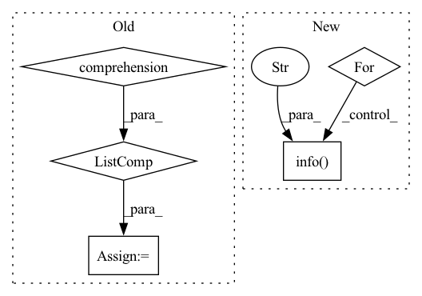

Pattern ID :2428
Before Change
ind, _ = hungray_aligment(y_true, y_pred)
map_ = {i[0]:i[1] for i in ind}
y_pred = np.array([map_[idx] for idx in y_pred] )
self.predictions = list([data.all_label_list[idx] for idx in y_pred])
self.true_labels = list([data.all_label_list[idx] for idx in y_true])
cm = confusion_matrix(y_true,y_pred) After Change
self.logger.info("%s", str(cm))
self.logger.info("***** Test results *****")
for key in sorted(test_results.keys()):
self.logger.info(" %s = %s" , key, str(test_results[key]))
test_results["y_true"] = y_true
test_results["y_pred"] = y_pred
In pattern: SUPERPATTERN
Frequency: 3
Non-data size: 5
Instances Fragment ID: 10281708
Project Name: thuiar/textoir
Commit Name: 203370e17d2a3452b90670171b60c44cb1500bcd
Time: 2021-08-03
Author: zhang-hl20@mails.tsinghua.edu.cn
File Name: open_intent_discovery/methods/semi_supervised/MCL_BERT/manager.py
M Class Name: MCLManager
N Class Name: MCLManager
M Method Name: test(3)
N Method Name: test(4)
M Parent Class:
N Parent Class:
M File Name: open_intent_discovery/methods/semi_supervised/MCL_BERT/manager.py
N File Name: open_intent_discovery/methods/semi_supervised/MCL_BERT/manager.py
M Start Line: 42
M End Line: 63
N Start Line: 133
N End Line: 148
Before Change
loader = self.get_dataloader(docs)
// get raw logit results from model
results = torch.cat(
[
x.logits
for x in self.trainer.predict(
model=self.model, dataloaders=loader, return_predictions=True
)
]
)
softmax = self.softmax(results)
// get confidence scores and label ints
confidence_and_labels_tensor = torch.max(softmax, dim=-1)
// section id correlates with index of batchencoding data
section_id = 0
for doc in docs:After Change
all_words = self.process_multi_frame_section(multi_frame_section)
for word in all_words:
// TODO: add BioLabelPreProcessor here
for i, label in enumerate(word.word_labels_strings):
if self.debug:
logger.info(
f"processing label: {label} for token {section.text[word.word_offsets[i][0]:word.word_offsets[i][1]]}"
)
self.entity_mapper.update_parse_states(
label,
offsets=word.word_offsets[i],
text=section.text, Fragment ID: 10281711
Project Name: astrazeneca/kazu
Commit Name: 4d1b6d74c016688209d82e500016dd8eda45da27
Time: 2021-11-16
Author: richard.jackson4@astrazeneca.com
File Name: azner/steps/ner/hf_token_classification.py
M Class Name: TransformersModelForTokenClassificationNerStep
N Class Name: TransformersModelForTokenClassificationNerStep
M Method Name: _run(2)
N Method Name: _run(2)
M Parent Class: BaseStep
N Parent Class: BaseStep
M File Name: azner/steps/ner/hf_token_classification.py
N File Name: azner/steps/ner/hf_token_classification.py
M Start Line: 61
M End Line: 103
N Start Line: 189
N End Line: 220
Before Change
)
section.entities.extend(entities)
if self.entity_splitter:
split_ents = pydash.flatten(
[self.entity_splitter(x, section.get_text()) for x in entities]
)
section.entities.extend(split_ents)
except Exception:
affected_doc_ids = [doc.idx for doc in docs]After Change
all_words = ner_processed_section.to_tokenized_words(self.config.id2label)
transformed_words = self.bio_preprocessor(all_words)
for transformed_word in transformed_words:
for i, label in enumerate(transformed_word.word_labels_strings):
if self.debug:
logger.info(
f"processing label: {label} for token {section.get_text()[transformed_word.word_offsets[i][0]:transformed_word.word_offsets[i][1]]}"
)
self.entity_mapper.update_parse_states(
label,
offsets=transformed_word.word_offsets[i],
text=section.get_text(), Fragment ID: 10281720
Project Name: astrazeneca/kazu
Commit Name: c06d9dfad81aea104f51e1918c1c3ce620d64cbf
Time: 2022-11-30
Author: richard.jackson4@astrazeneca.com
File Name: kazu/steps/ner/hf_token_classification.py
M Class Name: TransformersModelForTokenClassificationNerStep
N Class Name: TransformersModelForTokenClassificationNerStep
M Method Name: _run(2)
N Method Name: _run(2)
M Parent Class: BaseStep
N Parent Class: BaseStep
M File Name: kazu/steps/ner/hf_token_classification.py
N File Name: kazu/steps/ner/hf_token_classification.py
M Start Line: 192
M End Line: 205
N Start Line: 163
N End Line: 190